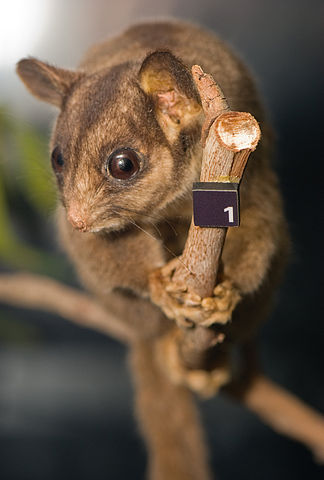
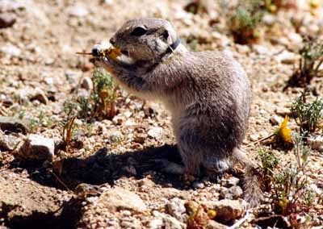
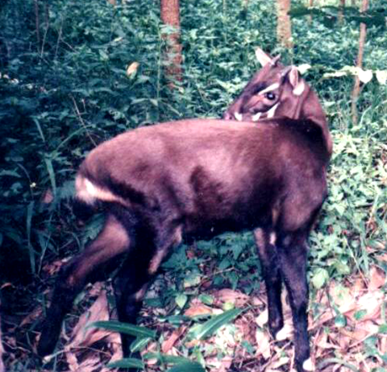
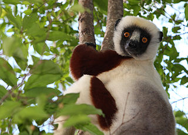

There are over 5,000 animal species that are considered endangered, or facing a high risk of extinction, according to the International Union for Conservation of Nature. Take this quiz to learn more and to test your own knowledge of endangered animals! Click the button below to continue.

- Squirrel
- Possum
- Chinchilla
- Mouse
- Weasel
That's right! This is the Leadbeater's Possum, local to Victoria, Australia. Thought extinct for 50 years, this species was rediscovered in 1961. They are threatened by forest fires and deforestation, which eliminates the hollow-bearing trees in which they build their nests.
Wrong answer!
This is the Leadbeater's Possum, local to Victoria, Australia. Thought extinct for 50 years, this species was rediscovered in 1961. They are threatened by forest fires and deforestation, which eliminates the hollow-bearing trees in which they build their nests.

- Groundhog
- Possum
- Squirrel
- Rat
- Ferret
That's right! This is the Mohave Ground Squirrel. These small creatures skillfully survive the harsh California desert. Their elusive nature makes them difficult to study or observe.
Wrong answer!
This is the Mohave Ground Squirrel. These small creatures skillfully survive the harsh California desert. Their elusive nature makes them difficult to study or observe.

- Zebra
- Goat
- Deer
- Ox
- Horse
That's right! This is the Saola, or Vu Quang Ox. Living in Lao and Vietnam, this critically endangered species is estimated to number under 700, with none in captivity. They are threatened by hunting and habitat loss.
Wrong answer!
This is the Saola, or Vu Quang Ox. Living in Lao and Vietnam, this critically endangered species is estimated to number under 700, with none in captivity. They are threatened by hunting and habitat loss.

- Bonobo
- Chimpanzee
- Gorilla
- Orangutan
- Monkey
That's right! This is the Bonobo. Bonobos reside in the Democratic Republic of Congo, and share 98.5% DNA with humans. The species is highly intelligent and possesses a complex, matriarchal social structure.
Wrong answer!
This is the Bonobo. Bonobos reside in the Democratic Republic of Congo, and share 98.5% DNA with humans. The species is highly intelligent and possesses a complex, matriarchal social structure.

- Sloth
- Monkey
- Squirrel
- Lemur
- Weasel
That's right! This is the Sifaka. These lemurs, found on the island of Madagascar, travel by climbing and leaping vertically from tree to tree. It is socially taboo to eat sifaka in most of Madagascar, but they are still threatened by forest destruction and some hunters.
Wrong answer!
This is the Sifaka. These lemurs, found on the island of Madagascar, travel by climbing and leaping vertically from tree to tree. It is socially taboo to eat sifaka in most of Madagascar, but they are still threatened by forest destruction and some hunters.
Thanks for taking my quiz! You answered out of 5 answers correctly!
To learn more about endangered species, consider visiting the World Wildlife Fund or Defenders of Wildlife websites.